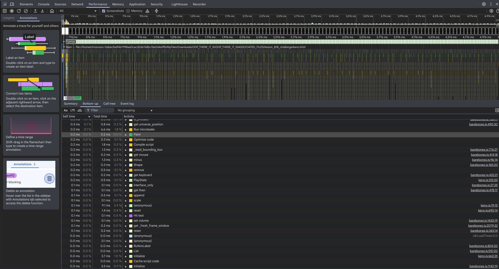
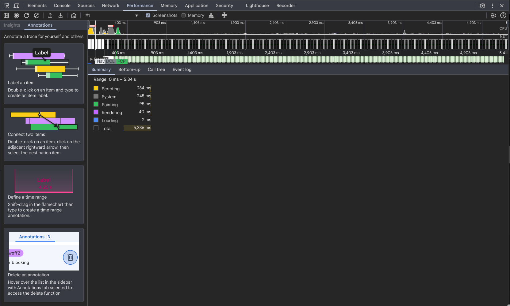
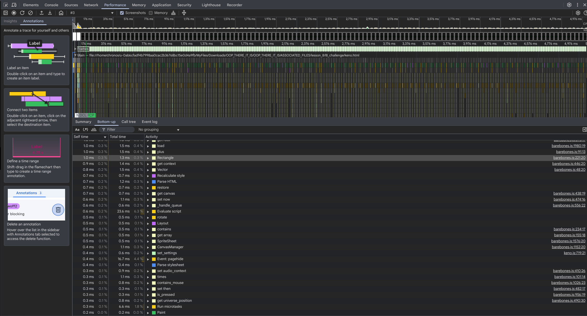
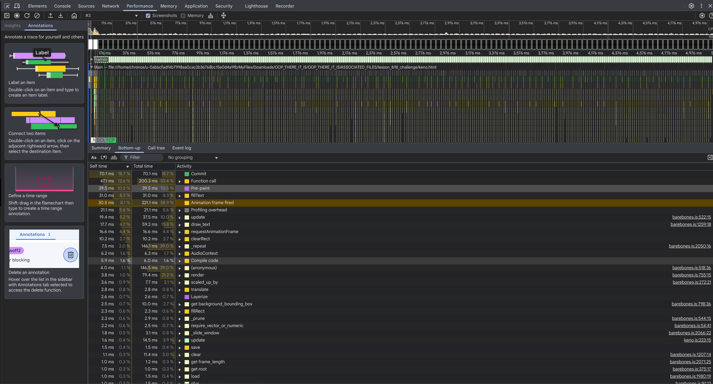

RETURN TO INDEX
LESSON 8: KENO
In this final lesson, you will build a highly sought after game of keno! In the process some more barebones.js classes will be used and extended and a greater focus on the user interface details will help you produce supreme products.
"Everybody has a plan until they get punched in the mouth."
~ Mike Tyson
CODE
The code for this section is too long to include in the page.
Open link to the program in the example section, right click the page, and select view source. From this view you can view the HTML and all linked CSS, JAVASCRIPT, and assets.
The link to barebones.js will provide you with the complete library code.
The link to keno.js will provide you with the example code.
NOTE: [CMD or CTRL] + U will usually view page source as well.
DEV TOOLS PERFORMANCE
There may be times when you want to analyze why, or if, your application is performing poorly under the hood. Luckily dev-tools provides a great set of tools, including the performance panel.
Dev-tools is a huge and complex toolkit, there are many ways to use it. This is only one small example. You are recommended to explore more ways.
Using the performance panel is very simple.
Just open the Dev-tools.
Then open the performance panel. This may be hidden, find it in settings.
Once you are in the performance panel, select the record button on the top left. Be prepared to act quickly.
Once recording has started, quickly start progressing through your game or application. If there is a specific thing that is giving you trouble, make sure to do that thing while recording.
Once you are done recording, click the stop recording button.
The page will compile the profile.
Once it is ready, you will see a whole lot of data appear.
You can learn on your own time how to decrypt it all. For now, you are going to want to look at the pie chart summary and the bottom up call stack.
By clicking the summary sub tab, you can view what portions of your application took up the most time and resources. Color coded.
By clicking the bottom up sub tab, you can see specifically which function calls took the most time and resources.
This one is the most useful because it allows you to identify exactly what is causing slowdowns or is eating up resources. Then you know where to put your attention and optimize.
You can also dig into an expensive or long running function call using the dropdowns and analyze exactly what is going on during live execution.
Just remember, these tools are great and all, but don't optimize prematurely. If it ain't broke, don't fix it.
WEB WORKERS
Web workers are a fantastic tool for a variety of use cases. Primarily, they are great for separating a thread of execution to utilize multiple CPU cores and prevent user interface blocking action.
So what are web workers exactly?
Web workers are like little mini javascript programs that run on a separate thread from your main javascript thread.
They have access to much but not all of the same properties of the window object. But they have no DOM access.
They also do not share scope. That means that they cannot see anything else in your program unless you give it to it via a special means.
You can think of web workers as a factory in China. You can send them some supplies, then they can create something with those supplies. Then they can send those supplies back. They cannot however go to the same grocery store as you, because they are in China, very far away.
Threads pass data to eachother via messages, which are essentially strings of data. This limits what you can send back and fourth to some extent. If it can't be serialized, it can't be sent. Not without some pre processing first.
Workers can however import libraries and scripts. So if you were using barebones.js to create a game and were diverting some processing to a web worker, you might import barebones.js into your worker so it can use those classes.
You should know, since CORS will rear it's ugly head again for web workers loaded from origins considered unsecure. There is however a nice little workaround:
const worker_script_to_url = worker_function => {
const
stringified = worker_function.toString(),
block_contents = stringified.substring(
stringified.indexOf('{') + 1,
stringified.lastIndexOf('}')
),
worker_blob = new Blob([block_contents], { type: 'application/javascript' });
return URL.createObjectURL(worker_blob);
}
The function above will nicely convert a function into a CORS friendly URL that can be passed into a Worker constructor. It is included in the help object of barebones.js.
Here is a basic example of a worker that repeats back a modified message.
const worker_script_to_url = worker_function => {
const
stringified = worker_function.toString(),
block_contents = stringified.substring(
stringified.indexOf('{') + 1,
stringified.lastIndexOf('}')
),
worker_blob = new Blob([block_contents], { type: 'application/javascript' });
return URL.createObjectURL(worker_blob);
}
const worker_function = () => {
self.onmessage = async message => {
self.postMessage(`I am a worker and I heard you say: '${message.data}'`)
}
}
const sample_worker = new Worker(worker_script_to_url(worker_function))
sample_worker.onmessage = message => console.log(`sample worker says: '${message.data}'`);
sample_worker.postMessage('hello')
// OUTPUTS sample worker says: 'I am a worker and I heard you say: 'hello''
The worker has a self.onmessage event handler and reponds with self.postMessage.
The main thread attaches a onmessage handler to the reference to the worker, what it should do on the main thread side of things.
Similarly the reference.postMessage sends messages to the worker.
Here is another example that imports barebones.js and accepts a vector as a message and returns a newly calculated one(only the plain array version however). This function has a loop that runs for a long time. The main application thread continues while the worker works away, all without interrupting the main thread. When the worker is done, it passes back the data via a message.
const worker_function = () => {
self.onmessage = async message => {
if (message.data.type === 'initialize') {
self.importScripts(`${message.data.url}../../../../../../../BAREBONES/barebones.js`);
self.Vector = BAREBONES.Vector;
}
else if (message.data.type === 'vector') {
let vec = new self.Vector(...message.data.vector);
for (let i = 0; i < 50000000; i++) {
vec = vec.plus(i * Math.random(), i * Math.random());
}
self.postMessage(vec.array);
}
};
self.onerror = error => {
self.postMessage(error);
self.close();
};
};
const sample_worker = new Worker(help.worker_script_to_url(worker_function));
sample_worker.onmessage = message => console.log(message.data);
sample_worker.postMessage({ type: 'initialize', url: document.location.href });
sample_worker.postMessage({ type: 'vector', vector: new Vector(2, 2).array });
In this one some event handling is implemented. When it receives an object with a type of initialize it imports a script from a computed file path.
When it receives a vector type object, it performs the operation and then posts a message when complete.
The benefit of web workers really comes into play with operations that can utilize an additional thread of execution on the CPU. Expensive, long-running processes and things that might block the UI.
Read the docs at the end of the lesson for more info.
JAVASCRIPT NUMBERS
So computers are weird. They do things that are not intuitive to humans.
For instance, we as humans usually use arabic style number system in base ten.
Computers however use a binary system with base 2. Or some power of two such as octal or hexadecimal which becomes binary.
Also since the numbers are represented by bits, only number up to a certain size can be processed by a CPU, in one bite.
Programming languages other than JAVASCRIPT often are more specific as to the bitwise type of numbers. This gives you more control but also makes things more complex and strict.
Without getting too deep into the implications of this.
If you need to perform arithmetic on a number that is too large in integer or decimal place, you can use a BigInt, see the docs.
The other thing worth noting is that some arithmetic will produce small inaccuracies. Such as:
console.log(0.1 + 0.2);
// OUTPUTS 0.30000000000000004
console.log(0.1 + 0.2 === 0.3);
// OUTPUTS false
This is simply due to the differences between the number systems.
One solution is the use the Number.toFixed() method that converts a number to a fixed number of decimal places. Keep in mind it returns a string so you might want to convert back to number.
For instance, if you are dealing with money, you will likely use Number.toFixed(2).
console.log(+(0.1 + 0.2).toFixed(2));
// OUTPUTS 0.3
Keep these things in mind, if you start noticing weird things happening with your numbers, it might be this type of problem.
LOCAL STORAGE
There may be times when you want to store some persistent data, like saving a game.
If you are not using a database, then the Local Storage API provides a very simple way of storing some semi-permanent data on the users computer. It only takes and gives string values though
NOTE: If you want a more permanent and structured data storage method on the client side, use IndexedDB. However know that it is not as easy to use as localStorage.
Say you have a score that you want to save. So simple.
const score = 37;
localStorage.score = score;
Now you refresh the page, turn off the computer, wait a week and come back.
console.log(localStorage.score);
// OUTPUTS '37'
This is very useful. However you may want to store some more complex data such as arrays and objects.
There is a nice formal syntax called JSON(JAVASCRIPT OBJECT NOTATION) that you can convert your data to and from so that it can be stored in string form in localStorage.
You can encode a combination of array or object of arrays or objects that ultimately contain only primitive values into JSON.
const json_example = [
{
x: 7,
y: {
z: 2,
j: 9
}
}
]
const stringified = JSON.stringify(json_example);
console.log(stringified);
// OUTPUTS [{"x":7,"y":{"z":2,"j":9}}]
As you can see it serializes the data. This type of data can then be stored in localStorage. For example in a game:
const game_state = {
player_name: 'Joe',
score: 42
}
localStorage.game_state = JSON.stringify(game_state);
Then to pull it back into JAVASCRIPT land:
const game_state = JSON.parse(localStorage.game_state);
console.log(game_state.score);
// OUTPUTS 42
This methodology allows for storing some more complex data.
However you are going to want your application to work the first time as well as every subsequent time. The first time you start up your app, there will be no value in localStorage for your game. So how do you initialize?
localStorage.game_state = localStorage.game_state || JSON.stringify({
player_name: 'Default',
score: 0
})
This ensures there is always a starting value to access. You can then access and alter it.
LocalStorage is a nice and simple way to store some semi-permanent and not too important or secure data for your web applications on the client computer. Don't go overkill with LocalStorage. If you need better data storage, use a database, or IndexedDB.
STATES
In all of the examples up until this point, there has only been a single state of the application.
An application or game state is a branch of the universe tree that has unique properties.
For instance, a menu screen could be a game state, then play could be another game state.
Different levels or game areas could also be considered different game states.
Games with good user interface and performance will have many game states.
For the purpose of making games with barebones.js classes, states allow you to define and activate and suspend different branches of your universe tree. This provides modularization as will as performance gains as you are not wasting resources on inactive or suspended branches, only the live branch.
A game state can be any instance of Interface, but is usually an extension of List.
The universe class comes with a StateManager class built into it:
class StateManager extends List {
constructor(options) {
options.universe_object = true;
super(options);
this.clear();
}
clear() {
this._current_state = this._queued_state = this._previous_state = null;
}
initialize() {
this._current_state && !this._current_state.initialized && this._current_state.initialize();
super.initialize();
}
update() {
if (this._queued_state) {
this._switch_to(this._queued_state);
this._queued_state = null;
}
if (!this._current_state || !this.initialized || !this._current_state.initialized) return;
this._current_state && this._current_state.update();
}
render() {
if (!this._current_state || !this.initialized || !this._current_state.initialized) return;
this._current_state && this._current_state.render();
}
handle_input(e) {
if (!this._current_state || !this.initialized || !this._current_state.initialized) return;
this._current_state && this._current_state.handle_input(e);
}
reset() {
if (!this._current_state || !this.initialized || !this._current_state.initialized) return;
this._current_state && this._current_state.reset();
}
_switch_to(state) {
if (!(state instanceof Interface)) {
throw new Error(`STATE MANAGER SAYS: INPUT MUST BE INTERFACE BUT GOT: ${state}`);
}
this._previous_state = this._current_state;
this._current_state = state;
this._children = [state];
!state.initialized && state.initialize();
}
request_switch_to_previous_state() {
this._previous_state && this.request_switch_to(this._previous_state);
}
request_switch_to(state) {
if (!(state instanceof Interface)) {
throw new Error(`STATE MANAGER SAYS: INPUT MUST BE INTERFACE BUT GOT: ${state}`);
}
this._queued_state = state;
}
}
Essentially the state manager acts as a filter that can hold many game states but only works on one state at a time.
You can switch to states without problems using the request methods:
this.root.state_manager.request_switch_to(this.root.state_manager.find_id('PLAY'));
Or then you can switch to another:
this.root.state_manager.request_switch_to(this.root.state_manager.find_id('PAUSE_MENU'));
Then you can switch to the previous state:
this.root.state_manager.request_switch_to_previous_state();
Using these methods you can easily navigate game or application states from anywhere in the universe tree.
As part of this lesson is to improve the user interface of your games, you will make every screen or menu a unique game state, as well as the play state.
GRIDS
There are going to be times when you are going to want to organize universe_objects into a grid or table like format.
If you were making a side-scroller or tile game you might have every universe_object in the game within grids.
GridList is a very powerful tile or pattern generation and management tool that barebones.js provides.
class GridList extends List {
constructor(options) {
options.universe_object = true;
super(options);
this._rows = this._options.rows || 0;
this._columns = this._options.columns || 0;
this._cell_width = this._options.cell_width || 0;
this._cell_height = this._options.cell_height || 0;
}
initialize() {
if (this._options.center) {
const center = this.root.canvas_manager
.canvas_center
.minus(this.bounding_box.size.divided_by(2, 2))
.plus(this._cell_width / 2, this._cell_height / 2);
this.position = new Vector(
this._options.center.x && center.x || this.position.x,
this._options.center.y && center.y || this.position.y
);
}
super.initialize();
}
add(v) {
if (!v.universe_object) {
throw new Error(`GRIDLIST SAYS: INPUT MUST UNIVERSE OBJECT`);
}
const row = Math.floor(this._children.length / this._columns);
const column = this._children.length % this._columns;
v.position = new Vector(column * this._cell_width, row * this._cell_height);
super.add(v);
}
replace_at(v, vec, b) {
Interface.require_is_instance(v);
const temp = Vector.require_vector_or_numeric(vec, b);
const index = temp.y * this._columns + temp.x;
const old = this._children[index] || null;
this._children[index] = v;
v.parent = this;
v.position = new Vector(temp.x * this._cell_width, temp.y * this._cell_height);
return old;
}
item_at(vec, b) {
const temp = Vector.require_vector_or_numeric(vec, b);
return this._children[temp.y * this._columns + temp.x];
}
get_anchor_position(v) {
for (let i = 0, j = this._children.length; i < j; i++) {
if (this._children[i] === v) {
const row = Math.floor(i / this._columns);
const column = i % this._columns;
return new Vector(column * this._cell_width, row * this._cell_height);
}
}
}
request_layer_sort() { }
get bounding_box() {
return new Rectangle({
position: this.universe_position.duplicate(),
size: new Vector(this._cell_width * this._columns, this._cell_height * this._rows)
});
}
get cell_quantity() {
return this._rows * this._columns;
}
}
Grids work by defining the a small set of parameters:
- CELL WIDTH
- CELL HEIGHT
- NUMBER OF COLUMNS
- NUMBER OF ROWS
Once these parameters have been set, the grid then has enough information to place all of the objects inserted into it at predefined coordinates.
Since GridList extends List it functions nearly the same, but with a few differences and additions.
You can use the add method, and GridList will place the added object at a position on the corresponding table based on the parameters.
Another method, replace_at, allows you to place or replace a specific item on the grid, in this way the grid can be filled sparsely.
The last thing worth noting is that you can use get_anchor_position to re-acquire the expected position that an object would be on the grid. With this you can move the position of an item in the grid and then float or snap it back into place later.
WARNING: Layer sorting is disabled for GridLists so that the grid is layered from top to bottom, left to right by default.
If you completed the challenge from the previous lesson and viewed the solution code. That code used a gridlist for the enemy formation.
This keno game will use a grid to organize all of the play tiles easily in a for loop.
The best way to learn grids is to put them to use, as you will later in this lesson.
LABELS
Though it is generally not recommended within a canvas environment, you can use canvas to draw text.
barebones.js provides a class for just this, Label.
class Label extends Interface {
constructor(options) {
options.universe_object = true;
super(options);
this.contents = this._options.contents || '';
this._previous_contents = this.contents;
this.memoize = this._options.memoize ?? true;
this.color = this._options.color || 'black';
this.font_name = this._options.font_name || 'Courier New';
this.font_size = this._options.font_size || '20px';
this.align = this._options.align || 'left';
this.baseline = 'top';
this.background_color = this._options.background_color || 'rgba(255, 255, 255, 0)';
this.background_scale = this._options.background_scale || new Vector(1, 1);
this.stroke = this._options.stroke ?? false;
this.line_height = this._options.line_height || +this.font_size.replace('px', '');
this._stroke_start = this.stroke;
}
update() {
if (!this.memoize && this._previous_contents !== this.contents) {
this._previous_contents = this.contents;
this._memoized._bounding_box = null;
}
super.update();
}
initialize() {
if (this._options.origin_center) {
const rect = this.bounding_box;
this.origin = new Vector(rect.size.x / 2, rect.size.y / 2);
}
super.initialize();
}
render() {
if (!this.visible) return;
super.render();
this.root.canvas_manager.draw_text(
this.contents,
this.universe_position,
this.rotation,
this.origin,
this.color,
this.align,
this.font_name,
this.font_size,
this.baseline,
this.scale,
this.background_color,
this.background_bounding_box,
this.stroke,
this.line_height
);
}
_read_bounding_box() {
const span = document.createElement('span');
span.innerHTML = this.contents.replaceAll(' ', ' ').replaceAll('\n', '
');
span.style.font = `${this.font_size} ${this.font_name}`;
span.display = 'none';
this.root.target.append(span);
const size = new Vector(span.offsetWidth, span.offsetHeight);
span.remove();
return new Rectangle({
position: this.universe_position.minus(this.origin),
size: size.times(this.scale)
});
}
get bounding_box() {
if (this.memoize) {
this._memoized._bounding_box = this._memoized._bounding_box || this._read_bounding_box();
return this._memoized._bounding_box;
}
return this._read_bounding_box();
}
get background_bounding_box() {
return this.bounding_box.scaled_up_by(this.background_scale);
}
}
The class is pretty simple to use.
Just set the parameters, many of which match css styles.
- CONTENTS
- THE ACTUAL TEXT CONTENT STRING
- MEMOIZE
- BOOLEAN THAT DETERMINES IF THE LABEL SHOULD UPDATE BOUNDING BOX WITH EVERY TICK
- SET THIS TO TRUE OR DONT SET AT ALL TO SAVE SIGNIFICANT RESOURCES
- COLOR
- TEXT COLOR IN CSS STRING FORMAT
- FONT_NAME
- CSS STRING FORMAT
- FONT_SIZE
- CSS STRING FORMAT
- ALIGN
- CSS STRING FORMAT TEXT ALIGNMENT
- BASELINE
- CSS STRING FORMAT CONTROLS TEXT BASELINE
- BACKGROUND_COLOR
- CSS STRING FORMAT
- BACKGROUND_SCALE
- EXPECTS VECTOR AND REPRESENTS PADDING
- STROKE
- BOOLEAN THAT SETS THE FILL OR STROKE STYLE FOR THE BACKGROUND
- LINE_HEIGHT
- CSS STRING FORMAT
- ORIGIN_CENTER
- BOOLEAN
Once the parameters are set, the rest is just like any other universe_object. You can change the contents and the instance will recalculate the bounding box with the change.
Labels can provide you with an easy means to draw text to a canvas. However, use them sparingly and prefer the use of image assets and or DOM elements.
BUTTONS
Another key feature of a user interface is the button.
barebones.js provides a ButtonSprite class as well as two sub-classes that inherit from Sprite. This means they require an image asset to work.
class ButtonSprite extends Sprite {
constructor(options) {
super(options);
this._pressed = this._down = this._up = false;
this._onclick = (this._options.onclick instanceof Function && this._options.onclick) || (() => null);
}
update() {
super.update();
if (this.mouse.contains_mouse(this.bounding_box)) {
this.hover();
}
this.up = (this._was_down && !this._down);
this._was_down = this._down;
this._pressed = false;
}
hover() {
this.root.canvas_manager.cursor_pointer_on();
}
handle_input(e) {
if (!this.touch || !this.mouse) return;
this._pressed = this.touch.contains_touch_press(this.bounding_box) || this.mouse.contains_mouse_press(this.bounding_box);
this._down = this.touch.contains_touch(this.bounding_box) || this.mouse.contains_mouse_down(this.bounding_box);
if (e && (e.type === 'mouseup' || e.type === 'touchend')) this._onclick(e);
super.handle_input(e);
}
get down() {
return this.visible && this._down;
}
get pressed() {
return this.visible && this._pressed;
}
}
class BinaryButtonSprite extends ButtonSprite {
constructor(options) {
super(options);
if (this.sprite_sheet.element_quantity < 2) {
throw new Error(`BINARY BUTTON SPRITE SAYS: REQUIRES TWO ELEMENTS BUT GOT: ${this.sprite_sheet.element_quantity}`);
}
this.on = this._options.on ?? false;
this.on ? (this.frame_index = 1) : (this.frame_index = 0);
}
handle_input(e) {
super.handle_input(e);
this.pressed && (this.on = !this.on);
this.on ? (this.frame_index = 1) : (this.frame_index = 0);
}
}
class TernaryButtonSprite extends BinaryButtonSprite {
constructor(options) {
super(options);
if (this.sprite_sheet.element_quantity < 3) {
throw new Error(`TERNARY BUTTON SPRITE SAYS: REQUIRES THREE ELEMENTS BUT GOT: ${this.sprite_sheet.element_quantity}`);
}
}
handle_input(e) {
super.handle_input(e);
this.down ? (this.frame_index = 2) : null;
}
}
The use of these buttons is easy.
Simply create the button like you would for any other Sprite.
Check the buttons pressed, down or up states, similar to how you would for a key state.
this._back_button = this.add(new Button({
spritesheet: this.root.back_sheet,
}));
if (this._back_button.pressed) {
console.log('THE USER PRESSED THE BUTTON');
}
else if (this._back_button.down) {
console.log('THE USER IS STILL HOLDING THE BUTTON DOWN');
}
else if (this._back_button.up) {
console.log('THE USER JUST RELEASED THE BUTTON');
}
There are also two additional button classes, BinaryButtonSprite and TernaryButtonSprite.
They both work essentially the same. BinaryButtonSprite requires that you give it a two component or more spritesheet and when it is pressed it switches between the two frame indices. Along with this switch it's on/off property changes to reflect.
TernaryButtonSprite works the same way but needs a three component sprite or more and the third index is the image that will be shown while the button is DOWN only.
The buttons use cursor cues to modify the state of the mouse cursor so that they are interactive like a DOM element would be.
Buttons are a useful feature and can be as creative as the image assets that they use.
BUTTON LABELS
Button labels work essentially the same as ButtonSprites but are based on a Label instead of a Sprite.
Because the Sprite and Label are mainly incompatible and JAVASCRIPT does not nativley allow multiple inheritance, some code duplication occurs.
class ButtonLabel extends Label {
constructor(options) {
super(options);
this.highlight_for = 0;
this._pressed = this._down = this._was_down = this.up = false;
this._onclick = (this._options.onclick instanceof Function && this._options.onclick) || (() => null);
}
update() {
super.update();
--this.highlight_for;
if (this.mouse.contains_mouse(this.background_bounding_box)) {
this.hover();
}
this.stroke = this._down || this.highlight_for > 0 ? !this._stroke_start : this._stroke_start;
this.up = (this._was_down && !this._down);
this._was_down = this._down;
this._pressed = false;
}
hover() {
this.root.canvas_manager.cursor_pointer_on();
}
handle_input(e) {
if (!this.touch || !this.mouse) return;
this._pressed = this.touch.contains_touch_press(this.background_bounding_box) || this.mouse.contains_mouse_press(this.background_bounding_box);
this._down = this.touch.contains_touch(this.background_bounding_box) || this.mouse.contains_mouse_down(this.background_bounding_box);
if (e && (e.type === 'mouseup' || e.type === 'touchend')) this._onclick(e);
super.handle_input(e);
}
get down() {
return this.visible && this._down;
}
get pressed() {
return this.visible && this._pressed;
}
}
Just keep in mind that button labels accept all of the same options as a Label but also function like a ButtonSprite.
SLIDERS
There are times when the user will need to input data within a range.
Common examples are volume or difficulty controls in a menu.
A slider is an input like component that acts like a ButtonSprite that slides along a line and represents a value.
They work the same as a DOM range type input element.
barebones.js provides a nicely functioning class for sliders where the button is a ButtonSprite.
class SliderButtonSprite extends ButtonSprite {
constructor(options) {
super(options);
this.starting_value = help.clamp(this._options.starting_value || 0, 0, 1);
this.length = this._options.length || 300;
this.line_color = this._options.line_color || 'rgb(0, 0, 0)';
this.locked_position = this.position.duplicate();
this.position = this.position.plus(this.starting_value * this.length, 0);
this.grabbed = false;
this.grab_start_postition = this.grab_postition = this.grab_type = this.grab_touch = null;
}
render() {
this.context.save();
this.context.fillStyle = this.line_color;
this.context.translate(...this.locked_position.array);
this.context.rotate(this.rotation);
this.context.fillRect(0, 0, this.length, 2);
this.context.restore();
super.render();
}
update() {
if (this.grabbed) {
if (this.grab_type === 'mouse') {
this.position.x = help.clamp(this.grab_start_postition.x + (this.mouse.position.x - this.grab_postition.x), this.locked_position.x, this.length + this.locked_position.x);
this.grabbed = this.mouse.left.down;
}
else {
this.position.x = help.clamp(this.grab_start_postition.x + (this.grab_touch.position.x - this.grab_postition.x), this.locked_position.x, this.length + this.locked_position.x);
this.grabbed = this.touch.touches.includes(this.grab_touch);
}
}
super.update();
}
handle_input(e) {
super.handle_input(e);
if (!this.grabbed && this.pressed) {
this.grabbed = true;
this.grab_type = e.type.includes('mouse') ? 'mouse' : 'touch';
if (this.grab_type === 'mouse') {
this.grab_postition = this.mouse.position.duplicate();
}
else {
this.grab_touch = this.touch.touch_within(this.bounding_box);
this.grab_postition = this.grab_touch.position.duplicate();
}
this.grab_start_postition = this.position.duplicate();
}
}
hover() {
if (this.down) {
this.root.canvas_manager.cursor_grabbing_on();
}
else {
this.root.canvas_manager.cursor_grab_on();
}
}
get value() {
return (this.position.x - this.locked_position.x) / this.length;
}
}
SliderButtonSprite is built to accept mouse or touch dragging.
When creating a SliderButtonSprite, make sure that you are aware of the options.
line_color controls the color of the line that the sprite slides upon.
starting_value sets the value that the slider starts out with. Defaults to 0.5. This number must be from 0 to 1.
length represents the width of the whole element, how far the slider can travel.
The last thing, which makes the slider useful in the first place, is accessing the value.
The value property always returns the value of the slider from 0 to 1. Left to right.
Sliders offer a nice means of letting the user control a value within a range.
ANIMATED SPRITES
Remember the animated spritesheets from lesson three?
Well barebones.js provides a class that implements this feature within the framework, AnimatedSprite.
This class has a bit more power though.
class AnimatedSprite extends Sprite {
constructor(options) {
super(options);
this.animations = {};
this.current_animation = null;
this.seconds_passed = 0;
this.direction_forward = true;
}
add(options) {
const
sprite_sheet = options.sprite_sheet,
sub_animation_name = options.sub_animation_name,
bouncing = options.bouncing ?? false,
frame_rate = options.frame_rate || 0.1;
this.animations[sub_animation_name] = { sprite_sheet, bouncing, frame_rate };
}
switch_to(sub_animation_name) {
if (this.current_animation === this.animations[sub_animation_name]) {
return;
}
this.direction_forward = true;
this.frame_index = 0;
this.seconds_passed = 0;
this.current_animation = this.animations[sub_animation_name];
this.sprite_sheet = this.current_animation.sprite_sheet;
}
update() {
if (!this.current_animation) {
return;
}
if (this.current_animation && this.sprite_sheet.element_quantity !== 1) {
this.seconds_passed += (this.time_elapsed / 1000) || 0;
while (this.seconds_passed > this.current_animation.frame_rate) {
this.seconds_passed -= this.current_animation.frame_rate;
if (this.direction_forward) {
++this.frame_index;
}
else {
--this.frame_index;
}
if (this.frame_index >= this.sprite_sheet.element_quantity) {
if (this.current_animation.bouncing) {
this.direction_forward = false;
this.frame_index = help.clamp(this.sprite_sheet.element_quantity - 2, 0, Infinity);
}
else {
this.frame_index = 0;
this.direction_forward = true;
}
}
if (this.frame_index < 0) {
this.direction_forward = true;
this.frame_index = 1;
}
}
}
super.update();
}
}
The class works like a collection of spritesheets that are intended to be looped over like a film reel.
The benefit of this is that you could create a game character with many different sprites representing a single universe_object.
For example the character might have a standing still animation. Then a running right or left animation. A jumping animation. All of the animations are in the form of spritesheets. This class allows you to keep them all in a single instance.
To use the class, instantiate it like you would any normal sprite.
this.money_wagger = this.add(new AnimatedSprite({
sprite_sheet: this.root.money_wagger_sheet
}));
Next use the add method to load up each spritesheet for the character or object. It expects an options object with the spritesheet, frame_rate(speed of animation), bouncing(boolean representing whether the animation repeats or bounces back and fourth), and sub_animation_name which is the tag for that spritesheet so you can switch to it later.
this.money_wagger.add({
sprite_sheet: this.root.money_wagger_sheet,
sub_animation_name: 'money_wagger',
});
Once you have loaded up the different animations, simply use the switch_to method to switch to the animation you want to be active at any point in time. Use the sub_animation_name to target the animation you want to switch to.
this.money_wagger.switch_to('money_wagger');
AnimatedSprites can be a single animation or a collection of hundreds, it is up too you. They provide a way to animate spritesheets and group together states of animation into a single universe_object.
HOW IT WORKS
A game of keno works like so:
- PLAYER MAKES A BET
- PLAYER SELECT BETWEEN 2 AND 10 NUMBERS OUT OF A BOARD OF 80 POSSIBILITIES
- COMPUTER SELECTS 20 RANDOM NUMBERS FROM THE BOARD OF 80
- EVERY NUMBER THAT WAS BOTH PICKED BY THE PLAYER AND THE COMPUTER IS A CATCH
- THE MORE CATCHES THE MORE THE PLAYER WINS
- THE PLAYER ALWAYS LOSES THIER BET THOUGH
Keno is extremely popular in casinos around the U.S.
Massive resources are expended to determine the best and most profitable ways to configure the games.
This game uses a payout table that was made from a combination of statistics, psychology, and user testing.
Essentially the table ensures that the house always wins in the long run. But increases the amount of dopamine releasing "wins" for the player to keep them engaged.
[
[0, 0, 0, 0 , 0 , 0 , 0 , 0 , 0 , 0 , 0 ,], // 0 PICKS
[0, 0, 0, 0 , 0 , 0 , 0 , 0 , 0 , 0 , 0 ,], // 1
[0, 0, 9, 0 , 0 , 0 , 0 , 0 , 0 , 0 , 0 ,], // 2
[0, 0, 2, 18, 0 , 0 , 0 , 0 , 0 , 0 , 0 ,], // 3
[0, 0, 1, 5 , 35, 0 , 0 , 0 , 0 , 0 , 0 ,], // 4
[0, 0, 0, 2 , 12, 350, 0 , 0 , 0 , 0 , 0 ,], // 5
[0, 0, 0, 1 , 5 , 40 , 1200, 0 , 0 , 0 , 0 ,], // 6
[0, 0, 0, 1 , 2 , 15 , 120 , 2400, 0 , 0 , 0 ,], // 7
[0, 0, 0, 0 , 2 , 10 , 50 , 400 , 5000, 0 , 0 ,], // 8
[0, 0, 0, 0 , 1 , 4 , 25 , 150 , 500 , 5000, 0 ,], // 9
[0, 0, 0, 0 , 1 , 3 , 10 , 40 , 300 , 900 , 5000,], // 10
] // 0, 1, 2, 3, 4, 5, 6, 7 , 8 , 9 , 10 CATCHES
The number of picks(numbers) that the player selected before playing vs the number of catches determines the multiplier against the players bet.
So that is how keno works.
This implementation of keno mimics how a machine at casino would work.
The game states will be:
- INTRO SCREEN
- HELP SCREEN
- SETTINGS SCREEN
- PLAY
Each state should be intuitive and informative to the player.
BOILERPLATE
The boilerplate code for this game is similar to the previous lesson.
'use strict';
const keno = (() => {
const {
help,
Vector,
Sprite,
List,
AudioToneList,
GridList,
Label,
ButtonLabel,
ButtonSprite,
SliderButtonSprite,
AnimatedSprite,
Universe
} = BAREBONES;
class NightmareSound extends AudioToneList { }
class WinSound extends AudioToneList { }
class BigWinSound extends AudioToneList { }
class JackpotSound extends AudioToneList { }
class HelpScreenState extends List { }
class SettingsScreenState extends List { }
class TitleScreenState extends List { }
class Tile extends List { }
class SpecialButtonSprite extends ButtonSprite { }
class PlayState extends List { }
class Keno extends Universe { }
return {
Keno
};
})();
window.addEventListener('DOMContentLoaded', () => {
Array.from(document.querySelectorAll('.keno-target')).forEach(target => {
new keno.Keno({
alpha: false, width: 2000, height: 1000, target, payouts:
[
[0, 0, 0, 0, 0, 0, 0, 0, 0, 0, 0,], // 0 PICKS
[0, 0, 0, 0, 0, 0, 0, 0, 0, 0, 0,], // 1
[0, 0, 9, 0, 0, 0, 0, 0, 0, 0, 0,], // 2
[0, 0, 2, 18, 0, 0, 0, 0, 0, 0, 0,], // 3
[0, 0, 1, 5, 35, 0, 0, 0, 0, 0, 0,], // 4
[0, 0, 0, 2, 12, 350, 0, 0, 0, 0, 0,], // 5
[0, 0, 0, 1, 5, 40, 1200, 0, 0, 0, 0,], // 6
[0, 0, 0, 1, 2, 15, 120, 2400, 0, 0, 0,], // 7
[0, 0, 0, 0, 2, 10, 50, 400, 5000, 0, 0,], // 8
[0, 0, 0, 0, 1, 4, 25, 150, 500, 5000, 0,], // 9
[0, 0, 0, 0, 1, 3, 10, 40, 300, 900, 5000,], // 10
]// 0, 1, 2, 3, 4, 5, 6, 7, 8, 9, 10 CATCHES
});
});
});
Some more classes are imported from barebones.js.
There are more classes this time to represent the various objects and states.
In the universe initializations at the bottom, alpha is disabled for performance increase since there is no need for transparency. The pay table is also input.
AUDIO LISTS
There are four audio list class extensions in this game to represent the complex code generated audio assets.
class NightmareSound extends AudioToneList {
play() {
for (let i = 0; i < 100; i++) {
this.add(this.audio.play_tone({
frequency: Math.random() * 1000,
duration: 0.02,
delay: (i * 0.02),
volume: 0.1
}));
}
}
}
class WinSound extends AudioToneList {
play() {
this.add(this.audio.play_tone({ scale: 5, note: 'D#', duration: 0.2, delay: 0, volume: 0.4 }));
this.add(this.audio.play_tone({ scale: 5, note: 'G', duration: 0.2, delay: 0.1, volume: 0.4 }));
}
}
class BigWinSound extends AudioToneList {
play() {
this.add(this.audio.play_tone({ scale: 4, note: 'D#', duration: 0.2, delay: 0, volume: 0.5 }));
this.add(this.audio.play_tone({ scale: 4, note: 'G', duration: 0.2, delay: 0.1, volume: 0.5 }));
this.add(this.audio.play_tone({ scale: 5, note: 'D#', duration: 0.2, delay: 0.2, volume: 0.5 }));
this.add(this.audio.play_tone({ scale: 5, note: 'G', duration: 0.2, delay: 0.3, volume: 0.5 }));
this.add(this.audio.play_tone({ scale: 6, note: 'D#', duration: 0.2, delay: 0.4, volume: 0.5 }));
this.add(this.audio.play_tone({ scale: 6, note: 'G', duration: 0.2, delay: 0.5, volume: 0.5 }));
}
}
class JackpotSound extends AudioToneList {
play() {
for (let i = 0; i < 40; i++) {
this.add(this.audio.play_tone({
frequency: 600 + (i * 20),
duration: 0.03,
delay: (i * 0.03),
volume: 0.6
}));
}
}
}
NightmareSound is a cacophony of a hundred randomly generated frequency of bleeps and bloops.
WinSound represents a small win. A simple two tone step up.
BigWinSound represents a medium win. It is a repeat of the previous but tripled across three octaves.
JackpotSound represents the biggest win state possible. It is a repeating series of increasing frequencies. Sounds like an alarm going off.
KENO UNIVERSE CLASS
The root universe extension class of keno holds root state for the application and loads the assets.
class Keno extends Universe {
async initialize() {
this.payouts = this._options.payouts;
this.money_wagger_sheet = await this.assets.load({
src: './images/money_wagger_inverted.png',
id: 'money_wagger_sheet',
type: 'image',
columns: 5
});
this.button_sheet = await this.assets.load({
src: './images/button_sheet.png',
id: 'button_sheet',
type: 'image',
columns: 4
});
this.up_sheet = await this.assets.load({
src: './images/arrow_up.png',
id: 'up_sheet',
type: 'image'
});
this.down_sheet = await this.assets.load({
src: './images/arrow_down.png',
id: 'down_sheet',
type: 'image'
});
this.reset();
super.initialize();
}
update() {
this.keyboard.is_pressed('Escape') && (window.location = '../lesson_8.html');
super.update();
}
reset() {
this.set_settings();
this.green = 'rgba(0, 255, 0, 1)';
this.title_screen_state = new TitleScreenState({ parent: this });
this.settings_screen_state = new SettingsScreenState({ parent: this });
this.help_screen_state = new HelpScreenState({ parent: this });
this.play_state = new PlayState({ parent: this });
this.nightmare_sound && this.nightmare_sound.stop();
this.nightmare_sound = new NightmareSound({ parent: this });
this.win_sound && this.win_sound.stop();
this.win_sound = new WinSound({ parent: this });
this.big_win_sound && this.big_win_sound.stop();
this.big_win_sound = new BigWinSound({ parent: this });
this.jackpot_sound && this.jackpot_sound.stop();
this.jackpot_sound = new JackpotSound({ parent: this });
this.state_manager.clear();
this.state_manager.request_switch_to(this.title_screen_state);
super.reset();
}
reset_settings() {
const default_settings = {
cash: 100.00,
volume: 0.5,
speed: 0.5
};
localStorage.keno_settings = JSON.stringify(default_settings);
}
set_settings(options = {}) {
if (!localStorage.keno_settings) {
this.reset_settings();
}
const settings = JSON.parse(localStorage.keno_settings);
this.cash = options.cash ?? settings.cash;
this.audio.volume = options.volume ?? settings.volume;
this.speed = options.speed ?? settings.speed;
const new_settings = {
cash: this.cash,
volume: this.audio.volume,
speed: this.speed
};
localStorage.keno_settings = JSON.stringify(new_settings);
}
dot_sound() {
this.audio.play_tone({ duration: 0.02, scale: 5, volume: 0.3 });
}
ding_sound() {
this.audio.play_tone({ duration: 0.02, scale: 7, volume: 0.4 });
}
tap_sound() {
this.audio.play_tone({ duration: 0.02, scale: 4, volume: 0.3 });
}
fail_sound() {
this.audio.play_tone({ duration: 0.2, scale: 2, volume: 0.3 });
}
}
Four image assets are loaded, two of which are multi-component spritesheets.
The update function just returns to the previous screen if Escape is presses.
The reset method is called at the end of the initialization since reset doubles as initialization.
Within the reset method:
- GAME SETTINGS STATE IS UPDATED VIA LOCAL STORAGE
- GLOBAL GREEN DECLARED
- GAME STATES ARE CREATED AND OR OVERRIDDEN
- SOUNDS ARE STOPPED CREATED OVERIDDEN
- STATEMANAGER SWITCHES TO CURRENT GAME STATE
The set_settings method overrides the localStorage settings and stores them in root state for the application.
Finally four more single tone sounds are declared in root state as methods.
HELP SCREEN
The help screen, like the rest of the game states, extends List.
class HelpScreenState extends List {
initialize() {
this._back_button = this.add(new ButtonLabel({
position: new Vector(90, 30),
contents: `GO BACK`,
color: this.root.green,
background_color: this.root.green,
font_size: '40px',
background_scale: new Vector(1.23, 1.3),
memoize: true,
stroke: true
}));
this._info_label = this.add(new Label({
position: new Vector(90, 180),
contents:
'SELECT BETWEEN TWO AND TEN NUMBERS ON THE BOARD\n\nSELECTIONS CAN BE MADE BY CLICKING, TAPPING, OR DRAGGING THE BOARD\n\nSELECT A BET SIZE YOU CAN COVER\n\nUSE THE UP/DOWN BUTTONS OR KEYS TO CHANGE BET AMOUNT\n\nPLAY BY PRESSING THE PLAY BUTTON OR SPACE OR ENTER KEYS\n\nYOU CAN RANDOMIZE OR CLEAR PICKS BY PRESSING THE CORRESPONDING BUTTONS',
color: this.root.green,
background_color: this.root.green,
font_size: '40px',
background_scale: new Vector(1.02, 1.1),
memoize: true,
stroke: true
}));
super.initialize();
}
update() {
this._back_button.up && (this.root.state_manager.request_switch_to_previous_state() || this.root.dot_sound());
super.update();
}
}
The help screen consists of a ButtonLabel in the top left of the screen that when clicked will switch to the previous game state.
The only other thing in this game state is a label describing the rules of the game.
SETTINGS SCREEN
The settings screen state involves a little more as it is responsible for changing some state.
class SettingsScreenState extends List {
initialize() {
this._back_button = this.add(new ButtonLabel({
position: new Vector(90, 30),
contents: `GO BACK`,
color: this.root.green,
background_color: this.root.green,
font_size: '40px',
background_scale: new Vector(1.23, 1.3),
memoize: true,
stroke: true
}));
this._reset_cash_button = this.add(new ButtonLabel({
position: new Vector(400, 30),
contents: `RESET CASH`,
color: this.root.green,
background_color: this.root.green,
font_size: '40px',
background_scale: new Vector(1.23, 1.3),
memoize: true,
stroke: true
}));
this._volume_label = this.add(new Label({
position: new Vector(150, 300),
contents: `VOLUME:`,
color: this.root.green,
font_size: '40px',
memoize: true,
origin_center: true
}));
this._volume_slider = this.add(new SliderButtonSprite({
position: new Vector(280, 300),
sprite_sheet: this.root.money_wagger_sheet,
scale: new Vector(0.26, 0.26),
line_color: 'rgb(0, 255, 0)',
length: 500,
starting_value: this.audio.volume
}));
this._speed_label = this.add(new Label({
position: new Vector(200, 400),
contents: `PLAY SPEED:`,
color: this.root.green,
font_size: '40px',
memoize: true,
origin_center: true
}));
this._speed_slider = this.add(new SliderButtonSprite({
position: new Vector(400, 400),
sprite_sheet: this.root.money_wagger_sheet,
scale: new Vector(0.26, 0.26),
line_color: 'rgb(0, 255, 0)',
length: 500,
starting_value: this.root.speed
}));
this._cash_label = this.add(new Label({
position: new Vector(900, 30),
contents: `CASH: $${this.root.cash.toFixed(2)}`,
color: this.root.green,
memoize: true,
font_size: '40px',
}));
super.initialize();
}
update() {
if (this._back_button.up) {
this.root.dot_sound();
this.root.set_settings({
speed: +this._speed_slider.value.toFixed(2),
volume: +this._volume_slider.value.toFixed(2)
});
this.root.state_manager.request_switch_to_previous_state();
}
if (this._reset_cash_button.up) {
this.root.dot_sound();
this.root.set_settings({
cash: 100.00
});
this._cash_label.clear_cache();
}
this._cash_label.contents = `CASH: $${this.root.cash.toFixed(2)}`;
super.update();
}
}
Added to the screen are:
- BACK BUTTON THAT TAKES YOU TO PREVIOUS GAME STATE
- RESET CASH BUTTON THAT SETS CASH BACK TOO 100
- VOLUME LABEL FOR THE VOLUME SLIDER
- VOLUME SLIDER
- SPEED LABEL FOR THE SPEED SLIDER
- SPEED SLIDER
- CASH LABEL WITH CURRENT CASH AMOUNT IN BANK
If the cash button is clicked, cash is reset to 100 bucks.
If the back button is pressed, the root settings are set to reflect the state of the sliders.
INTRO SCREEN
The intro screen just shows the intro message and when pressed shows a second message for a short time before switching to play.
class TitleScreenState extends List {
initialize() {
this.entered = false;
this.time_remaining = 160;
this.play = this.add(new ButtonLabel({
position: this.root.canvas_manager.canvas_center,
contents: '$ KENO $',
color: this.root.green,
font_size: '300px',
origin_center: true,
memoize: true,
background_scale: new Vector(2, 2)
}));
super.initialize();
}
update() {
if (!this.entered) {
if (this.play.pressed || this.keyboard.is_pressed('Enter') || this.keyboard.is_pressed(' ')) {
this.root.dot_sound();
this.entered = true;
this.remove(this.play);
this.ready = this.request_add(new Label({
position: this.root.canvas_manager.canvas_center,
contents: 'PRESS ESC\nTO RETURN',
color: this.root.green,
font_size: '200px',
memoize: true,
origin_center: true
}));
}
}
else if (this.time_remaining <= 0) {
this.reset();
this.root.state_manager.request_switch_to(this.root.play_state);
this.root.nightmare_sound.play();
}
else {
--this.time_remaining;
}
super.update();
}
}
This temporary screen gives the player just enough time to get ready to play, and builds anticipation.
TILE
The tile class is the class that all of the elements on the playing board will use.
class Tile extends List {
constructor(options) {
options.universe_object = true;
super(options);
}
initialize() {
this.selected = false;
this.hit = false;
this.button = this.add(new ButtonSprite({
sprite_sheet: this.root.button_sheet,
scale: this._options.button_scale
}));
this.label = this.add(new Label({
contents: this._options.number || '00',
origin_center: true,
color: this.root.green,
memoize: true,
font_size: this._options.font_size || '20px'
}));
super.initialize();
}
update() {
super.update();
if (this.button.up && !this.state_parent.in_progress) {
this.state_parent.clear_computer_picks();
!this.selected
? (this.selected = (this.state_parent.selected_count < 10))
: (this.selected = !this.selected);
}
this.button.frame_index =
(this.selected && this.hit) ? 2 : this.hit ? 3 : this.selected ? 1 : 0;
}
}
The tile is a List that contains a Label with it's corresponding number and a Sprite for the border.
It also has properties for selected and hit. Selected for when the player has selected that tile. Hit for when the computer has selected it.
Within update the frame_index of the border sprite is updated to reflect the aformentioned properties.
Additionally it changes it's selected state when clicked or swiped by the user. However it does not allow itself to be selected unless there are less than ten other tiles already selected, the maximum amount.
SPECIAL BUTTON SPRITE
SpecialButtonSprite is a minor extension of ButtonSprite that adds border and fill rendering logic.
class SpecialButtonSprite extends ButtonSprite {
update() {
--this.highlight_for;
super.update();
}
initialize() {
this.highlight_for = 0;
super.initialize();
}
render() {
this.context.save();
this.context.strokeStyle = this.root.green;
this.context.strokeRect(...this.bounding_box.array);
if (this.down || this.highlight_for > 0) {
this.context.fillStyle = this.root.green;
this.context.fillRect(...this.bounding_box.array);
}
this.context.restore();
super.render();
}
}
This class exists to make the arrow buttons act like the rest of the user interface buttons in the game.
PLAY STATE
The play state is where most of the logic and content of the game exists.
class PlayState extends List {
constructor(options) {
options.state_ceiling = true;
super(options);
}
initialize() {
this.button_scale = 0.4;
this.in_progress = false;
this.bet = 0.05;
this.computer_selections = [];
this.animation_delay = 0;
this.bet_down_delay = this.bet_up_delay = 30;
this.money_wagger = this.add(new AnimatedSprite({
sprite_sheet: this.root.money_wagger_sheet,
position: new Vector(600, 500),
scale: new Vector(1.25, 1.25),
visible: false
}));
this.money_wagger.add({
sprite_sheet: this.root.money_wagger_sheet,
sub_animation_name: 'money_wagger',
});
this.money_wagger.switch_to('money_wagger');
this.table_border = this.add(new Sprite({
sprite_sheet: this.root.button_sheet,
position: new Vector(220, 550),
scale: new Vector(1.45, 2),
}));
this.table = this.add(new Label({
position: new Vector(40, 300),
color: this.root.green,
memoize: true,
font_size: '50px'
}));
this.bet_label = this.add(new Label({
position: new Vector(370, 888),
contents: `BET $${this.bet.toFixed(2)}`,
color: this.root.green,
background_color: this.root.green,
font_size: '40px',
background_scale: new Vector(1.3, 1.82),
memoize: true,
stroke: true
}));
this.win_label = this.add(new Label({
visible: false,
position: new Vector(510, 40),
contents: `YOU WON\n\n$0.00`,
color: this.root.green,
background_color: this.root.green,
font_size: '50px',
background_scale: new Vector(1.2, 1.1),
memoize: true,
stroke: true
}));
this.bet_up_button = this.add(new SpecialButtonSprite({
sprite_sheet: this.root.up_sheet,
scale: new Vector(0.4, 0.4),
position: new Vector(710, 860)
}));
this.bet_down_button = this.add(new SpecialButtonSprite({
sprite_sheet: this.root.down_sheet,
scale: new Vector(0.4, 0.4),
position: new Vector(710, 940)
}));
this.play_button = this.add(new ButtonLabel({
position: new Vector(46, 860),
contents: 'PLAY',
color: this.root.green,
background_color: this.root.green,
font_size: '90px',
memoize: true,
background_scale: new Vector(1.1, 1.1),
stroke: true
}));
this.cash_label = this.add(new Label({
position: new Vector(90, 36),
contents: `CASH $${this.root.cash.toFixed(2)}`,
color: this.root.green,
background_color: this.root.green,
font_size: '40px',
memoize: true,
background_scale: new Vector(1.23, 1.3),
stroke: true
}));
this.help_button = this.add(new ButtonLabel({
position: new Vector(30, 120),
contents: 'HELP',
color: this.root.green,
background_color: this.root.green,
font_size: '40px',
memoize: true,
background_scale: new Vector(1.1, 1.1),
stroke: true
}));
this.quit_button = this.add(new ButtonLabel({
position: new Vector(160, 120),
contents: 'QUIT',
color: this.root.green,
background_color: this.root.green,
font_size: '40px',
memoize: true,
background_scale: new Vector(1.1, 1.1),
stroke: true
}));
this.settings_button = this.add(new ButtonLabel({
position: new Vector(40, 190),
contents: 'SETTINGS',
color: this.root.green,
background_color: this.root.green,
font_size: '40px',
memoize: true,
background_scale: new Vector(1.1, 1.1),
stroke: true
}));
this.random_button = this.add(new ButtonLabel({
position: new Vector(294, 120),
contents: 'RANDOM',
color: this.root.green,
background_color: this.root.green,
font_size: '40px',
memoize: true,
background_scale: new Vector(1.1, 1.1),
stroke: true
}));
this.clear_button = this.add(new ButtonLabel({
position: new Vector(280, 190),
contents: 'CLEAR',
color: this.root.green,
background_color: this.root.green,
font_size: '40px',
memoize: true,
background_scale: new Vector(1.1, 1.1),
stroke: true
}));
this.button_grid = this.add(new GridList({
parent: this,
position: new Vector(840, 80),
columns: 10,
rows: 8,
cell_width: this.root.button_sheet.width * this.button_scale,
cell_height: this.root.button_sheet.height * this.button_scale,
}));
for (let i = 0; i < 80; i++) {
this.button_grid.add(new Tile({
sprite_sheet: this.root.button_sheet,
button_scale: new Vector(this.button_scale, this.button_scale),
font_size: '50px',
number: (`${i + 1}`)
}));
}
super.initialize();
}
update() {
if (!this.in_progress) {
this.update_buttons();
}
this.animate();
this.refresh_ui();
super.update();
}
play() {
if (this.bet > this.root.cash || this.selected_count < 2) return;
this.in_progress = true;
this.root.set_settings({
cash: +(this.root.cash - this.bet).toFixed(2)
});
this.clear_computer_picks();
this.computer_selections = this.random_picks(20);
}
play_end() {
const
catches = this.catch_count,
selected = this.selected_count,
starting_index = this.starting_table_index(selected),
payout = this.root.payouts[selected][catches] * this.bet;
if (payout <= 0) {
this.root.fail_sound();
}
else if (catches <= starting_index + 1) {
this.root.win_sound.play();
}
else if (catches <= starting_index + 3) {
this.root.big_win_sound.play();
this.money_wagger.visible = true;
}
else {
this.root.jackpot_sound.loop();
this.money_wagger.visible = true;
this.money_wagger.scale = new Vector(2, 2);
}
payout > 0 && (this.win_label.visible = true);
this.win_label.contents = `YOU WON\n\n$${payout.toFixed(2)}`;
this.root.set_settings({
cash: +(this.root.cash + payout).toFixed(2)
});
}
animate() {
--this.animation_delay;
if (this.computer_selections.length && this.animation_delay <= 0) {
const pick = this.computer_selections.shift();
this.button_grid._children[pick].hit = true;
this.animation_delay = Math.floor(20 - (this.root.speed * 20));
if (this.button_grid._children[pick].selected) {
this.root.ding_sound();
}
else {
this.root.tap_sound();
}
}
else if (this.in_progress && !this.computer_selections.length) {
this.in_progress = false;
this.play_end();
}
}
clear_computer_picks() {
this.button_grid._children.forEach(v => v.hit = false);
this.money_wagger.visible = false;
this.win_label.visible = false;
this.money_wagger.scale = new Vector(1.25, 1.25);
this.root.jackpot_sound.stop();
}
update_buttons() {
this.help_button.up && (this.root.dot_sound() || this.root.state_manager.request_switch_to(this.root.help_screen_state));
this.settings_button.up && (this.root.dot_sound() || this.root.state_manager.request_switch_to(this.root.settings_screen_state));
this.quit_button.up && (this.root.reset() || this.root.dot_sound());
this.clear_button.up && (this.clear_picks() || this.root.dot_sound());
this.random_button.up && (this.randomize_picks() || this.root.dot_sound());
!this.bet_up_button.down && !this.keyboard.is_down('ArrowUp') && (this.bet_up_delay = 30);
if (this.bet <= 9.95) {
if ((this.bet_up_button.up
|| this.keyboard.is_pressed('ArrowUp'))) {
this._bet_up();
}
else if (this.bet_up_button.down || this.keyboard.is_down('ArrowUp')) {
--this.bet_up_delay;
this.bet_up_delay <= 0 && this._bet_up();
}
}
!this.bet_down_button.down && !this.keyboard.is_down('ArrowDown') && (this.bet_down_delay = 30);
if (this.bet >= 0.10) {
if ((this.bet_down_button.up
|| this.keyboard.is_pressed('ArrowDown'))) {
this._bet_down();
}
else if (this.bet_down_button.down || this.keyboard.is_down('ArrowDown')) {
--this.bet_down_delay;
this.bet_down_delay <= 0 && this._bet_down();
}
}
if ((this.play_button.up
||
this.keyboard.is_pressed(' ')
||
this.keyboard.is_pressed('Enter'))
) {
this.play_button.highlight_for = 4;
this.root.dot_sound();
this.play();
}
}
_bet_up() {
this.bet = +(this.bet + 0.05).toFixed(2);
this.bet_up_button.highlight_for = 4;
this.root.dot_sound();
}
_bet_down() {
this.bet = +(this.bet - 0.05).toFixed(2);
this.bet_down_button.highlight_for = 4;
this.root.dot_sound();
}
refresh_ui() {
this.cash_label.contents = `CASH $${this.root.cash.toFixed(2)}`;
this.bet_label.contents = `BET $${this.bet.toFixed(2)}`;
this.table.contents = this.bet > this.root.cash
? `YOU\nCAN'T\nCOVER\nTHAT\nBET`
: this.selected_count < 2
? `PLEASE\nSELECT\nTWO\nOR\nMORE\nNUMBERS`
: this.populated_table;
}
clear_picks() {
this.clear_computer_picks();
this.button_grid._children.forEach(v => v.selected = false);
}
random_picks(quantity = 0) {
const potential = Array(80).fill(null).map((v, i) => i);
for (let i = 0; i < 10; i++) {
potential.sort(() => Math.random() - 0.5);
}
return potential.slice(0, quantity);
}
randomize_picks() {
const next_picks = this.random_picks(this.selected_count);
this.clear_picks();
next_picks.forEach(v => (this.button_grid._children[v].selected = true));
}
get populated_table() {
let output = ``;
for (let i = 0; i < this.selected_count; i++) {
output += `${i + 1}: $${(this.root.payouts[this.selected_count][i + 1] * this.bet).toFixed(2)}\n`;
}
return output;
}
get selected_count() {
return this.button_grid._children.filter(v => v.selected).length;
}
get catch_count() {
return this.button_grid._children.filter(v => v.selected && v.hit).length;
}
starting_table_index(selected = 0) {
return this.root.payouts[selected].findIndex(v => v !== 0);
}
}
Within initialize:
- STATE PROPERTIES DECLARED
- MONEY WAGGER ANIMATED SPRITE ADDED AND INITIALIZED AS INVISIBLE
- PAYOUT TABLE BORDER
- PAYOUT TABLE LABEL
- BET LABEL
- WIN LABEL INVISIBLE
- BET UP BUTTON
- BET DOWN BUTTON
- PLAY BUTTON
- CASH LABEL
- HELP BUTTON SWITCHES TO HELP STATE ON CLICK
- QUIT BUTTON SWITCHES TO INTRO STATE ON CLICK
- SETTINGS BUTTON SWITCHES TO SETTINGS SCREEN STATE ON CLICK
- RANDOM BUTTON RANDOMIZES PLAYER SELECTIONS ON THE BOARD IF THEY EXIST
- CLEAR BUTTON REMOVES ALL PLAYER SELECTIONS FROM THE BOARD
- BUTTON GRID IS THE GRIDLIST THAT MANAGES ALL OF THE TILES
- TILES ARE CREATED AND ADDED TO GRID VIA FOR LOOP OF 80
Within update:
- UPDATE BUTTONS AND RESPOND TO USER INPUT BUT ONLY IF THE PLAY ANIMATION IS NOT ACTIVE
- THE ANIMATE METHOD CALLED
- UI IS REFRESHED
The play method is called when the player clicks the play button. Within it only continues if the player has selected a valid set of number tiles and has enough money to cover the bet. The the animation is started with the flag set. The bet is deducted from the bank. The computers previous picks are cleared, if any. Then the computer makes its selections.
The play_end method is called when the play animation is completed. Within this method the payout is calculated based on the number of catches, selections, the bet, and the pay table. If there is a payout, the win label displays the win amount and the bank is credited. Additionally depending on the amount of the payout, or more specifically the number of relative catches, a sound is played. If a higher category of win is achieved, the moneywagger is made visible, possibly scaled up.
The animate method happens before play_end and after play. Essentially what it does is, based on the root speed setting, lights up the numbers on the board based on the picks of the computer and plays corresponding sounds. If a catch occurs a different sound happens than a miss. This continues on until it runs out of computer picks then it calls play_end.
The clear_computer_picks method is self explanatory. It clears all of the computer picks from the board and hides the moneywagger and win labels.
The update_buttons method simply checks the state of all of the user interface objects and handles interaction, as defined above.
The _bet_up and _bet_down methods update the bet amount and truncate any ghost number values.
The refresh_ui method updates the text content of the UI labels.
The clear_picks method just clears the player selections.
The random_picks method returns a set of n random numbers out of 80.
The randomize_picks methods clears the user selections and then using the random_picks method calculates new random player selections of the same quantity. The board reflects these selections.
The populated_table getter loops over the pay table with the current game state information to create a string representing the proper payouts to display to the player.
The selected_count getter returns the number of tiles that are currently selected.
The catch_count getter does the same but for catches.
Finally starting_table_index is a utility method for determining what amount of catches translate to different win state sounds and displays. This way the win states are not about the money amount, but rather relative catches.
That's keno! This walkthrough was at a much faster pace and higher level, you are recommended to study the code itself and mess around with it. The challenge for this lesson asks you to do just that.
FUTURE STUDIES
WEBGL 3D GRAPHICS
WebGL2.0 is a very low level API offered in browsers that allows you to create extremely fast 3D graphics and access the GPU directly. The API has a very steep learning curve and you will be expected to work with linear algebra and matrices. This being said it gives you a level of power and control that very little else can provide.
SVG
Scalable Vector Graphics is a similar API to that of canvas but with a whole mini language of it's own and way more methods and effects. It is very fast and designed specifically for the web.
GAME AND ANIMATION LIBRARIES
The ultimate solution for the smart programmer is to use the tried and true animation and gaming libraries that are available to build your games. Nothing can compare to doing something from scratch, you have an intimate understanding of every piece of your application and 100% full creative control. However, with this comes steep learning curves, worn out fingers, and a lot of time spent recreating the wheel that could have been spent creating new things. It is for this reason that I reccomend getting acquainted with a modern library for the type of project you are working on. That is, the more you know about the bare bones the better you will be able to utilize these libraries and tools. Don't forsake your learning for easy shortcuts.
OTHER LANGUAGES
As much as it is wonderful, JAVASCRIPT has many limitations. Other programming languages are much better suited for performance intensive or highly object oriented programming. Typescript is a language that is essentially JAVASCRIPT with extras. It allows you to implement OOP and type control with a smooth and familiar syntax. Also a low level language like C, Java, or Python is going to give you much more performance power, math power, and access to so much more. For the domain, JAVASCRIPT gets the job done. You are however recommended to look around and starting mastering another language once you have mastered this one.
FINAL THOUGHTS
I think that the thought of learning programming sounds very boring to most people and they are not wrong. It is for that reason that making the process fun and the products satisfying so much more important. For me, making games added that much needed flavor to the learning process. I really hope that it can do the same for you. If you create something amazing from the things you learned from these lessons and want to show it off, I would love too see it.
AUTHOR: Falken Brown
CHALLENGE
Your final challenge will be to add some type of bonus rounds or feature to the game of keno.
REMEMBER: DO NOT LOOK AT THE SOLUTION CODE BEFORE TRYING THE CHALLENGE YOURSELF!
Instructions:
- Go to the ASSOCIATED_FILES related to this lesson and open l8_challenge in your code editor.
- Open the index.html file in your browser.
- You do not need to edit the HTML.
- Open the keno.js file in your code editor.
- Your goal will be to extend the code provided to implement your version of a bonus round. See the comments at the top of the file for suggestions.
- You are recommended but not required to use barebones.js as toolkit.
- If you are feeling adventurous, try and make a mini-game state in addition to another bonus feature.
- Regardless of how you come to a solution, the important part is that you are prepared to EXPLAIN EVERY PART of your code in detail.
Good Luck!
HINT: Check out the links at the bottom of this page for some useful stuff.
ADDITIONAL RESOURCES
Each lesson will explain and provide research resources for a general concept or skill. It is highly recommended that you take the time to review lessons, research subjects, and practice on your own between lessons.
At the end of each lesson will be a challenge, completing these assignments is paramount to your retention of the taught material. The struggle is where the learning really occurs, embrace it.